Very Ordinary
"Very ordinary" is Ozspeak for "sucks rocks". I'm using it in the US sense. Two friends complained I don't post pictures as often as I used to. I told them that stuff around town had become routine. I was told to rise above it. So here are a few pictures of everyday things that would have merited posting a year ago.
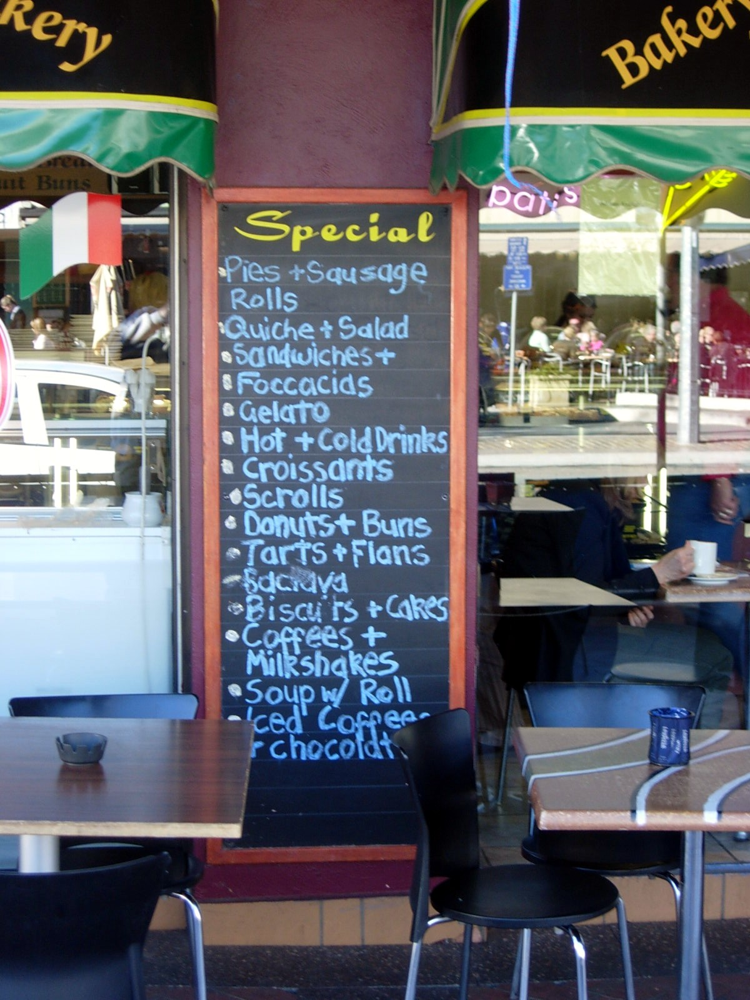
People ask what Oz food is like. Here's a cafe menu that's a pretty fair sample. As you can tell, there's a strong English influence. (An Australian company recently announced a plan to market meat pies at US football games. Hot dogs are rare here, and are always referred to as "American hot dogs".) There's also a strong Italian influence, since there's been a lot of immigration from central and eastern Europe. I've mentioned iced tea is unheard of, but every restaraunt has lemon lime bitters. The right to an after-dinner capuccino is enshrined in the Constitution, and I'm sure when I get back to the US, I'm going to get wierd looks by ordering one in an Indian restraunt, like I did tonight.
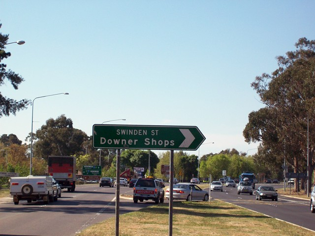
Feeling cheerful? We can help!
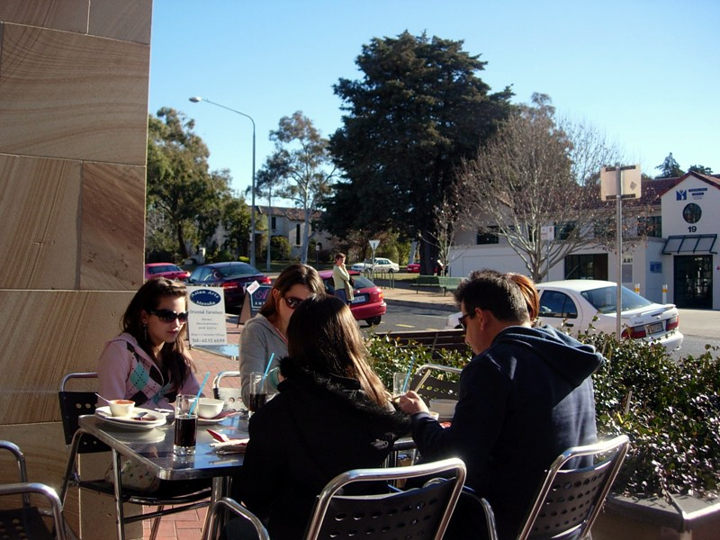
Everyone complains about Canberra winters (highs in the mid-50s) like it was Minnesota. We don't go to the beach every day after work like they do in Sydney, Melbourne, Cairns, Darwin, Perth and every other proper Australian city, and the fish (amazingly fresh by US standards) suffers on its 2.5 hour trip from the coast. Despite all the complaining, there's never a day so cold that people aren't eating lunch outdoors. Here's lunch at a Malaysian restaraunt (also plentiful here) in Manuka, a somewhat upscale neighborhood, in the middle of freakin' July.
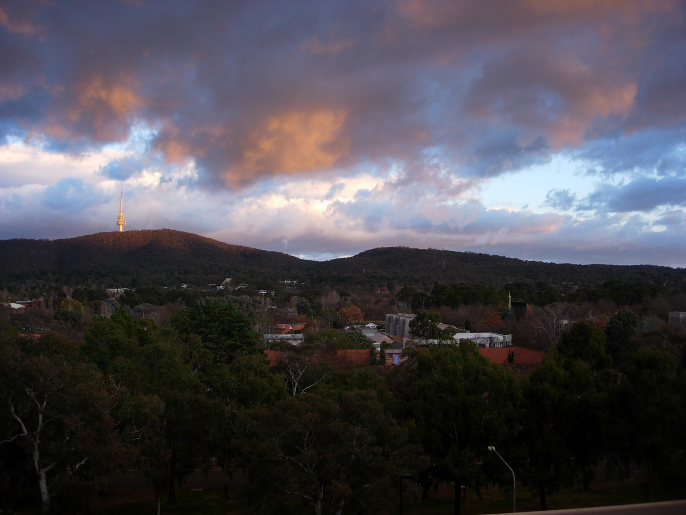
View from my balcony, winter morning.
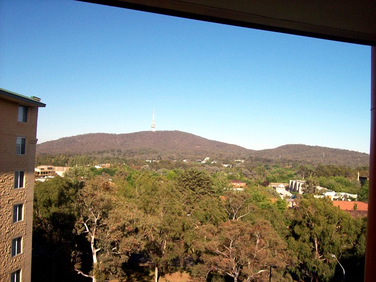
Spring morning
The CISAC web site has a better picture than the one I took. Here's where I swim, in one of Canberra's three Olympic sized pools. (Swimming is the natural sport, after AFL.)
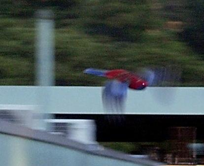
I think I mentioned the birds are georgeous but unphotographable. All you have to do is look at them and they're gone. Here's a king parrot I caught on the wing.
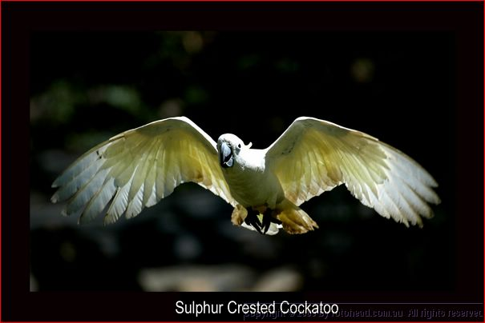
This bird, along with the Galah (red/gray parrot), magpie and corrowang, are the most frequent roadside birds. You'll see flocks of them fussing in the trees or feasting in the median.
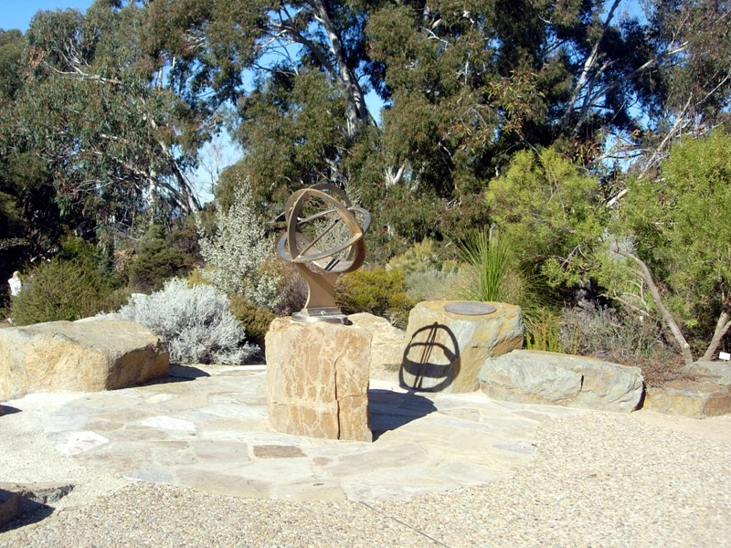
Sundial at the botanical gardens, one of my favorite places to hang out.
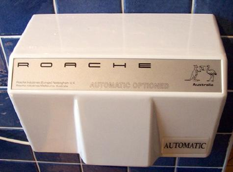 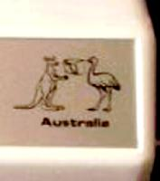 |
No comment.
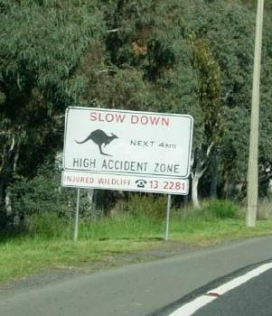 |
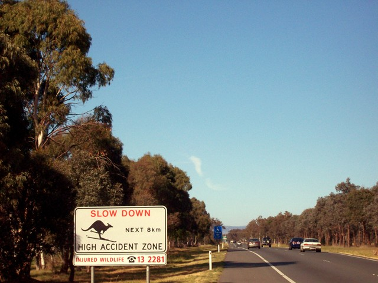 |
Subtle graffiti. Sign on the right is on the highway to the Snowy Mountains.
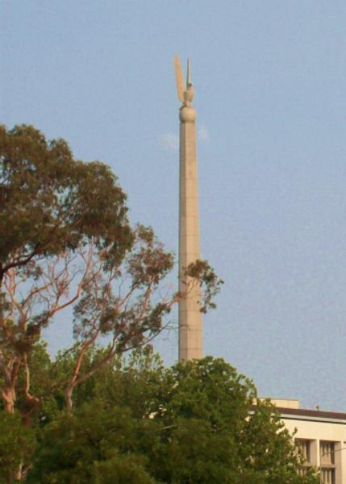
The US gave this fine piece of Gondorian sculpture to Oz to commemorate their role in WWII.
The locals reverently call it "Bugs Bunny".
Yankee Go Home: Riding for the airport at 6AM, a huge orange sun sat on the horizon. "Forest fire, " I commented. "Global warming," said the cabbie. "Just kidding."